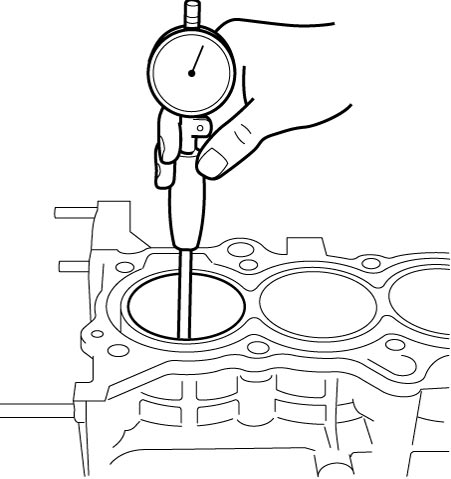
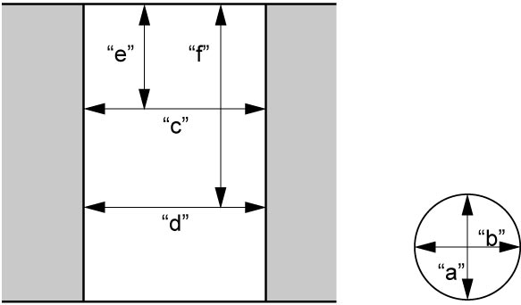
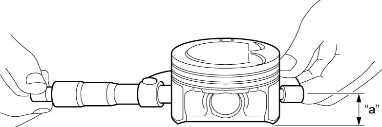
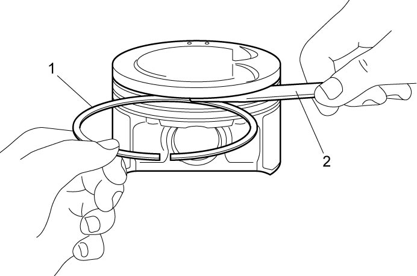
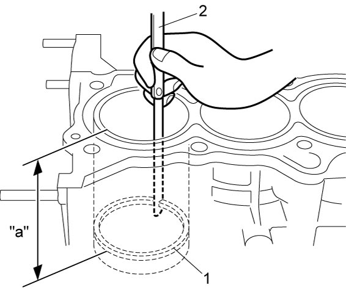

1D
| Cylinder, Piston and Piston Ring Inspection |
Cylinder
Visual inspection
Check cylinder walls for scratches, roughness or ridges which indicate excessive wear. If cylinder bore is very rough, deeply scratched or ridged, replace cylinder block, piston rings and/or pistons.
Cylinder bore diameter, taper and out-of-round
Using a cylinder gauge, measure cylinder bore in thrust and axial directions at two positions (“a” and “b”) and cylinder taper (“c” and “d”) as shown in figure.
If any of the following conditions is found, replace cylinder block.
•Cylinder bore diameter exceeds limit.
•Difference of measurements at two positions exceeds taper limit.
•Difference between thrust and axial measurements exceeds out-of-round limit.

•Difference of measurements at two positions exceeds taper limit.
•Difference between thrust and axial measurements exceeds out-of-round limit.
Cylinder bore diameter
Standard: 78.000 – 78.014 mm (3.0709 – 3.0714 in.)
Limit: 78.050 mm (3.0728 in.)
Cylinder taper and out-of-round
Limit: 0.010 mm (0.0004 in.)

 "Expand image")

 "Expand image")
| “e”: | 50 mm (1.97 in.) | “f”: | 100 mm (3.94 in.) |
Piston
Visual inspection
Check piston for faults, crack or other damages.
Damaged or faulty piston should be replaced.
Piston diameter
As shown in figure, piston diameter should be measured at specified position “a” 12.0 mm (0.472 in.) from piston skirt end in the direction perpendicular to piston pin.
Piston diameter specification
Standard size (used piston): 77.969 – 77.981 mm (3.0697 – 3.0701 in.)
Standard size (new piston with coating): 77.975 – 78.007 mm (3.0699 – 3.0711 in.)

 "Expand image")
| “a”: | 12.0 mm (0.472 in.) |
Piston clearance
Measure cylinder bore diameter and piston diameter to find their difference which is piston clearance. Piston clearance should be within specification. If it is not as specified, replace cylinder block, piston rings and/or pistons.
NOTE:
Cylinder bore diameters used here are measured in thrust direction at two positions.
Piston clearance
Standard (used piston): 0.019 to 0.045 mm (0.0008 to 0.0017 in.)
Standard (new piston with coating): –0.007 to 0.039 mm (–0.0003 to 0.0015 in.)
Limit: 0.161 mm (0.0063 in.)
| “a”: | 12.0 mm (0.472 in.) |
Ring groove clearance
1)Before checking, piston grooves must be clean, dry and free from carbon deposits.
2)Fit new piston ring (1) into piston groove, and measure clearance between ring and ring land using feeler gauge (2). If clearance is out of limit, replace piston.
Ring groove clearance
| Standard | Limit | |
|---|---|---|
| 1st ring | 0.03 – 0.07 mm (0.0012 – 0.0028 in.) |
0.12 mm (0.0047 in.) |
| 2nd ring | 0.02 – 0.06 mm (0.0008 – 0.0024 in.) |
0.10 mm (0.0039 in.) |
| Oil ring | 0.04 – 0.16 mm (0.0016 – 0.0063 in.) |
— |

 "Expand image")
Piston Ring
Piston ring end gap
To measure end gap, insert piston ring (1) into cylinder bore and then measure the gap using feeler gauge (2).
If measured gap exceeds limit, replace ring.
NOTE:
Remove carbon deposit from top of cylinder bore before inserting piston ring.
Piston ring end gap
| Item | Standard | Limit |
|---|---|---|
| Top ring | 0.30 – 0.40 mm (0.0118 – 0.0157 in.) |
0.7 mm (0.0276 in.) |
| 2nd ring | 0.65 – 0.80 mm (0.0256 – 0.0315 in.) |
1.0 mm (0.0394 in.) |
| Oil ring | 0.10 – 0.40 mm (0.0040 – 0.0157 in.) |
1.2 mm (0.0472 in.) |

 "Expand image")
| “a”. | 120 mm (4.72 in.) |